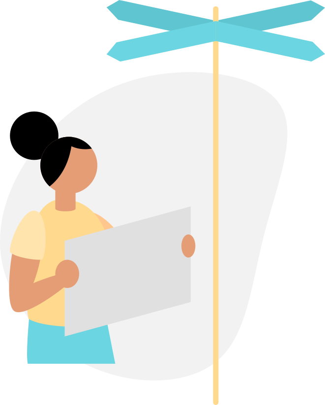

<div *ngIf="followers.length > 0; else noFollowers">
  <ion-grid style="margin-bottom: 100px;">
    <ion-row>
      <ion-col size="4" *ngFor="let follower of followers">
        <ion-grid class="wrapper" (click)="gotoFollower(follower.username)">
          <ion-row>
            <ion-col size="auto">
              <ion-avatar style="height: 60px; width: 60px; --border-radius: 50%">
                
              </ion-avatar>
            </ion-col>
            <ion-col size="auto" style="display: flex;" class="ion-align-items-center">
              <div>
                <p style="margin-bottom: 0;"><strong>{{follower.firstname}} {{follower.lastname}}</strong></p>
                <p style="margin-bottom: 0;">@{{follower.username}}</p>
              </div>
            </ion-col>
          </ion-row>
        </ion-grid>
      </ion-col>
    </ion-row>
  </ion-grid>
</div>

<ng-template #noFollowers>
  <ion-row style="display: flex; flex-direction: column;" class="ion-align-items-center">
    <ion-col style="display: flex; flex-direction: column;" class="ion-align-items-center" size-xs="10" size-sm="10"
      size-md="6" size-lg="4" size-xl="4">
      
    </ion-col>
  </ion-row>
  <ion-row>
    <ion-col class="ion-text-center">
      <h2><strong>This user has no followers yet.</strong></h2>
    </ion-col>
  </ion-row>
</ng-template>
